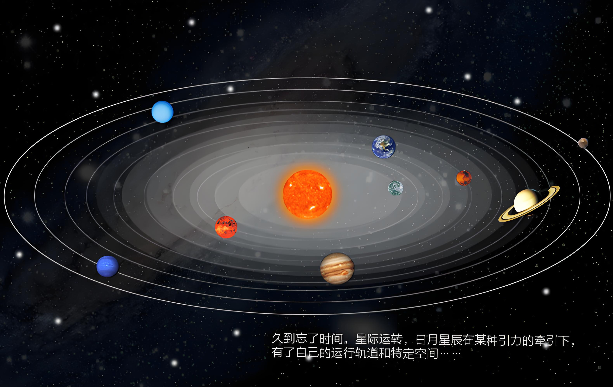
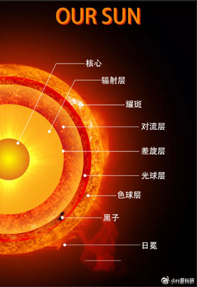
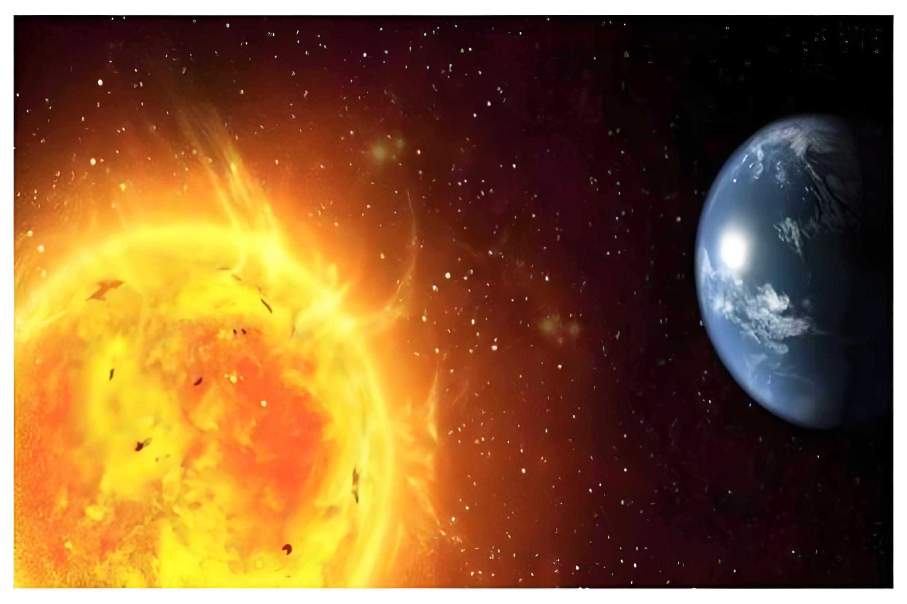

（返回上一页）
（返回上一页）太阳是太阳系的中心天体。

（返回上一页）
从结构上看，太阳内部有核心区、辐射区和对流区。核心区温度极高，约1500万摄氏度，压力巨大，在这里氢聚变为氦，这个核聚变过程产生巨大能量。辐射区主要靠辐射来传递能量，光子要经历无数次吸收和再发射才能向外传播。对流区的能量靠对流传递，等离子体物质上下翻滚运动。
太阳的大气层分为光球层、色球层和日冕层。光球层是我们平常看到的发光表面，温度约5500摄氏度。色球层在光球层之上，温度从几千摄氏度到几万摄氏度不等，它平时被光球的光芒掩盖，只有在日全食等情况下可见。日冕层是最外层，温度高达几百万摄氏度，延伸范围很广。

太阳活动包括太阳黑子、耀斑、日珥等。太阳黑子是光球层上温度较低的区域，看起来较暗。耀斑是色球层局部区域突然增亮的现象，会释放出巨大能量。日珥是色球层表面喷起的火焰状物质。这些太阳活动会对地球产生影响，比如影响地球的磁场和电离层，干扰通信和卫星设备等。